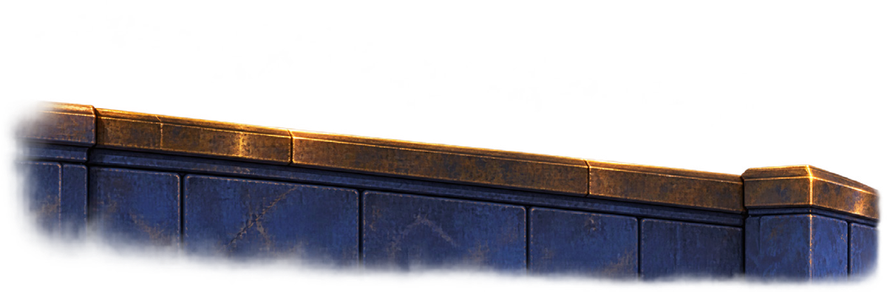

Why is −12°C colder than 12°C? We’ll start with numbers below zero, then explore equal groups, quick division checks, squares and cubes. Each idea will help you choose a calculation and understand why it works.
We’ll work through this chapter together. Keep a pencil nearby: when you reach a Try or Practice question, cover the working underneath and have a go. Then uncover it and compare the steps, not only the final number.


Sam’s town is at 12°C. Sarah’s town is at −12°C. Both temperatures contain 12, but Sarah will certainly want the warmer coat! What difference does that little minus sign make?
Pause and think. Why might Sam feel comfortable while Sarah feels very cold? If Sarah’s temperature rises by 10°C, will her town be as warm as Sam’s?
12°C is 12 degrees above zero; −12°C is 12 degrees below zero. Sam’s town is warmer. From −12°C, a rise of 10°C takes Sarah’s town to −2°C:
−2°C is still colder than Sam’s 12°C. Sarah’s town has warmed up, but it has not caught up with Sam’s.